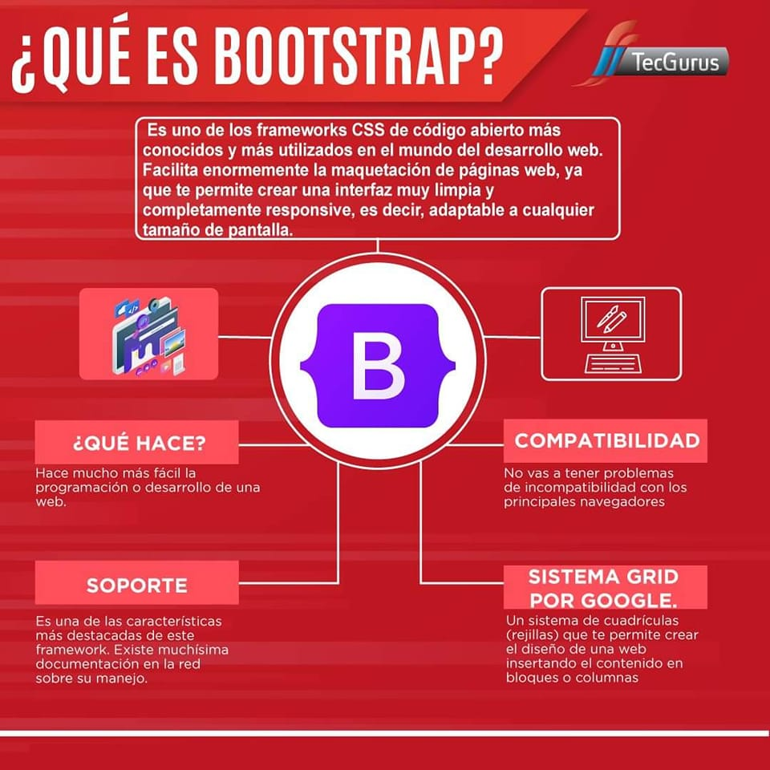

¿Qué es BootStrap?
Bootstrap es un framework front-end que fornece estructuras de CSS para la creación de sitios web y aplicaciones responsivas de forma rápida y simple. Además, puede lidiar con sitios web de desktop y páginas de dispositibos mobiles de la misma forma. Originalmente, Bootstrap fue desarrollado para Twitter por un grupo de desarrolladores liderados por Mark Otto y Jacob Thornton. Tornandose una de las estructuras de front-end y proyectos de código abierto más populares del mundo. Antes de ser una estructura de código fuente abierto, Bootstrap era conocido como Twitter Blueprint. Después de algunos meses de desarollo, Twitter realizó su primer Hack Week: el proyecto ganó una gran popularidad cuando desarrolladores de todos los niveles de habilidad comenzaron a utilizar el framework sin ninguna orientación externa. Tras el evento, ello sirvió como guía de estilo para el desarrollo de herramientas internas en la empresa por más de un año antes de su lanzamiento tornarse publico.
Para volver al menú principal click aquí